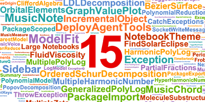

THE FRONT PAGE
EDITOR'S NOTE: A busy day in the latent space. #Judgment and craft
BREAKING VECTORS

NEURAL HORIZONS
Alibaba extends Qwen architecture to physical robotics
The introduction of the Qwen-Robot suite attempts to anchor large language models into physical actuators, though translating token prediction into reliable real-world physics introduces unpredictable latency and physical edge cases. The release highlights a growing industry shift from digital reasoning to tangible automation, where the primary constraint remains the messy unpredictability of hardware.
LAB OUTPUTS

Wolfram adds LLM assistant, risks trading precision for speed
Mathematica 15 introduces an LLM assistant alongside new symbolic music tools, grafting statistical language models onto a platform historically built on strict mathematical determinism. The real uncertainty lies in whether engineers will spot subtle hallucinations before they corrupt exact symbolic computations.
NLnet backs 67 open-source projects as institutional code rots
The European grantmaker's latest funding round injects capital into essential, unglamorous infrastructure that commercial tech routinely underfunds. While a necessary lifeline for independent software craft, relying on fragmented grant cycles risks leaving critical utilities without long-term maintenance.
Version control adapts to codebases written by machines
As autonomous agents begin to generate the majority of software patches, traditional Git repositories face structural strain. The immediate challenge lies in auditing high-volume, automated code churn without completely abandoning the rigorous discipline of manual code review.
INFERENCE CORNER
Nvidia’s cuTile brings Rust safety semantics to GPU kernels
By extending Rust’s type system to device code, this framework attempts to eliminate data races in parallel hardware execution. However, wrapping massive CUDA complexity in compiler-enforced safety guarantees risks introducing silent performance abstractions that mask the hardware's reality.